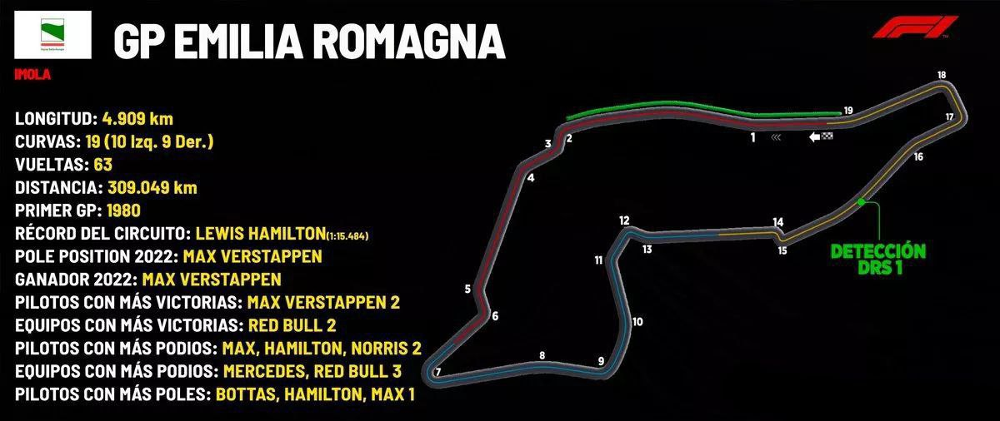
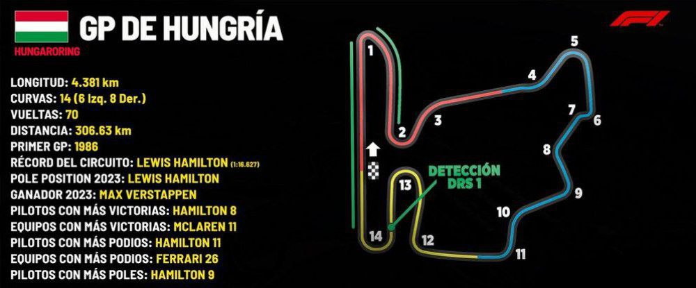
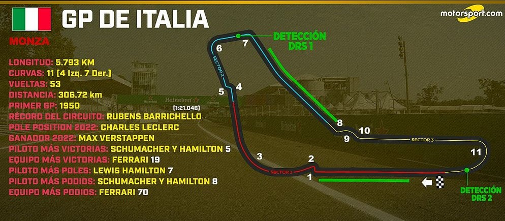
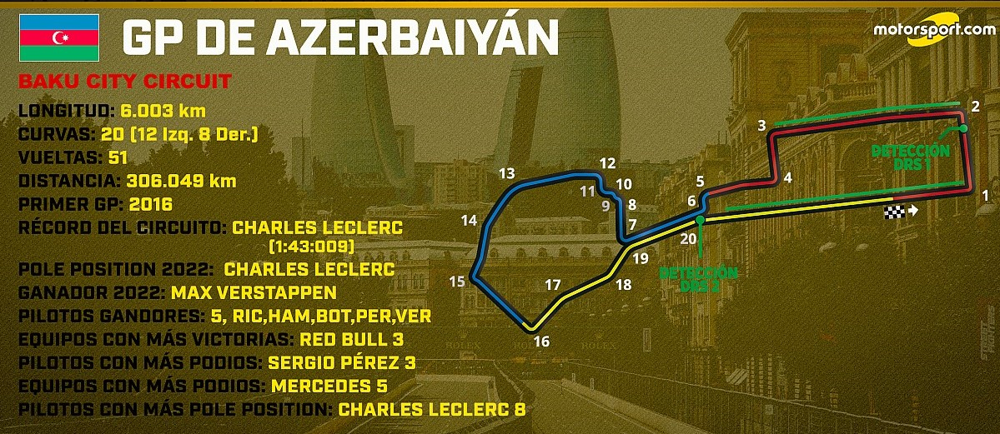
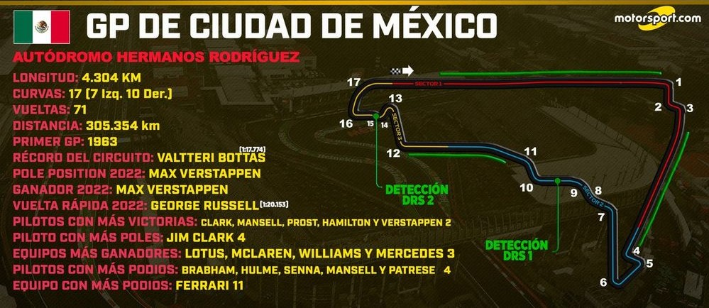

Gran Premio Bahrain
Circuito: Internacional Circuit Bahrain
Distancia del recorrido: 5.412km vueltas
Numero de vueltas de GP: 57 - 308.484 kms
Primer Gran Premio: 2004
Record de vuelta: 1:31.447 (Pedro de la Rosa - 2005)
Piloto con mayor victorias: Lewis Hamilton(5)
Escuderia con mayor victorias: Ferrari(7)

Gran Premio de Arabia Saudi
Circuito: Jeddah Corniche Circuit
Distancia del recorrido: 6.175km
Numero de vueltas de GP: 50 - 308.700 kms
Primer Gran Premio: 2021
Record de vuelta: 1:30.734 (Lewis Hamilton - 2021)
Piloto con mayor victorias: Max Verstappen(1), Lewis Hamilton(1), Sergio Perez(1)
Escuderia con mayor victorias: Red Bull(2)

Gran Premio de Asutralia
Circuito: Albert Park
Distancia del recorrido: 5.303km
Numero de vueltas de GP: 58 - 307.574 kms
Primer Gran Premio: 1985
Record de vuelta: 1:20.260 (Charles Leclerc - 2022)
Piloto con mayor victorias: Michael Schumacher(4)
Escuderia con mayor victorias: Ferrari(13)
Gran Premio de Japon
Circuito: Suzuka Circuit
Distancia del recorrido: 5.807km
Numero de vueltas de GP: 53 - 307.771 kms
Primer Gran Premio: 1976
Record de vuelta: 1:30.983 (Lewis Hamilton - 2019)
Piloto con mayor victorias: Michael Schumacher(6)
Escuderia con mayor victorias: McLaren(9)

Gran Premio de China
Circuito: Shanghai Internacional Circuit
Distancia del recorrido: 5.451km
Numero de vueltas de GP: 56 - 305.256kms
Primer Gran Premio: 2004
Record de vuelta: 1:32.238 (Michael Schumacher - 2004)
Piloto con mayor victorias: Lewis Hamilton(6)
Escuderia con mayor victorias: Mercedes(6)

Gran Premio de Miami
Circuito: Miami Internacional Autodrome
Distancia del recorrido: 5.410
Numero de vueltas de GP: 57 - 308.37kms
Primer Gran Premio: 2022
Record de vuelta: 1:29.708 (Max Verstappen - 2023)
Piloto con mayor victorias: Max Verstappen(2)
Escuderia con mayor victorias: Red Bull(2)

Cran Premio de la Emilia-Romaña
Circuito: Autodromo Enzo e Dino Ferrari
Distancia del recorrido: 4.909 km
Numero de vueltas de GP: 63 - 309.267 kms
Primer Gran Premio: 2020 (antiguamente Gran Premio de San Marino)
Record de vuelta: 1:15.484 (Lewis Hamilton - 2020)
Piloto con mayor victorias: Max Verstappen(2)
Escuderia con mayor victorias: Red Bull(2)

Gran Premio de Monaco
Circuito: Circuit de Monaco
Distancia del recorrido: 3.337 km
Numero de vueltas de GP: 78 - 260.286 kms
Primer Gran Premio: 1950
Record de vuelta: 1.12:909 (Lewis Hamilton - 2021)
Piloto con mayor victorias: Ayrton Senna(6)
Escuderia con mayor victorias: McLaren(15)
Gran Premio de Canadá
Circuito: Circuit Gilles-Villeneuve
Distancia del recorrido: 4.361 km
Numero de vueltas de GP: 70 - 305.270 kms
Primer Gran Premio: 1967
Record de vuelta: 1:13.078 (Valtteri Bottas - 2019)
Piloto con mayor victorias: Michael Schumacher(7),Lewis Hamilton(7)
Escuderia con mayor victorias: Ferrari(14)
Gran Premio de España
Circuito: Circuit de Barcelona-Catalunya
Distancia del recorrido: 4.675 km
Numero de vueltas de GP: 66 - 308.550 km
Primer Gran Premio: 1951
Record de vuelta: 1:16.330 (Max Verstappen - 2023)
Piloto con mayor victorias: Michael Schumacher(6),Lewis Hamilton(6)
Escuderia con mayor victorias: Ferrari(12)

Gran Premio de Austria
Circuito: Red Bull Ring
Distancia del recorrido: 4.318 km
Numero de vueltas de GP: 71 - 306.578 km
Primer Gran Premio: 1964
Record de vuelta: 1:05.619 (Carlos Sáinz - 2020)
Piloto con mayor victorias: Max Verstappen(4)
Escuderia con mayor victorias: McLaren(6), Ferrari(6)

Gran Premio de Gran Bretaña
Circuito: Silverstone
Distancia del recorrido: 5.891 km
Numero de vueltas de GP: 52 - 306.332 km
Primer Gran Premio: 1950
Record de vuelta: 1:27.097 (Max Verstappen - 2020)
Piloto con mayor victorias: Lewis Hamilton(8)
Escuderia con mayor victorias: Ferrari(17)

Gran Premio de Hungria
Circuito: Hungaroring
Distancia del recorrido: 4.381 km
Numero de vueltas de GP: 70 - 306.670 km
Primer Gran Premio: 1986
Record de vuelta: 1:16.627 (Lewis Hamilton - 2020)
Piloto con mayor victorias: Lewis Hamilton(8)
Escuderia con mayor victorias: McLaren(11)

Gran Premio de Belgica
Circuito: Circuit de Spa-Francorchamps
Distancia del recorrido: 7.004 km
Numero de vueltas de GP: 44 - 308.176 km
Primer Gran Premio: 1950
Record de vuelta: 1:46.286 (Valtteri Bottas - 2018)
Piloto con mayor victorias: Michael Schumacher(6)
Escuderia con mayor victorias: Ferrari(18)

Gran Premio de Holanda
Circuito: Circuit Park Zandvoort
Distancia del recorrido: 4.259 km
Numero de vueltas de GP: 72 - 306.648 kms
Primer Gran Premio: 1952
Record de vuelta: 1:11.097 (Lewis Hamilton - 2021)
Piloto con mayor victorias: Jim Clark(4)
Escuderia con mayor victorias: Ferrari(9)

Gran Premio de Italia
Circuito: Autodromo Internazionale di Monza
Distancia del recorrido: 5.793 km
Numero de vueltas de GP: 53 - 307.029 km
Primer Gran Premio: 1950
Record de vuelta: 1:21.046 (Rubens Barrichello - 2004)
Piloto con mayor victorias: Michael Schumacher(5), Lewis Hamilton(5)
Escuderia con mayor victorias: Ferrari(20)

Gran Premio de Azerbaiyán
Circuito: Circuito callejero de Baku
Distancia del recorrido: 6.003 km
Numero de vueltas de GP: 51 - 306.153 km
Primer Gran Premio: 2016
Record de vuelta: 1:43.009 (Charles Leclerc - 2019)
Piloto con mayor victorias: Sergio Perez(2)
Escuderia con mayor victorias: Red Bull(4)

Gran Premio de Singapore
Circuito: Circuito callejero de Marina Bay
Distancia del recorrido: 5.063 km
Numero de vueltas de GP: 61 - 308.843 km
Primer Gran Premio: 2008
Record de vuelta: 1:35.867 (Lewis Hamilton - 2023)
Piloto con mayor victorias: Sebastian Vettel(5)
Escuderia con mayor victorias: Mercedes(4), Red Bull(4), Ferrari(4)

Gran Premio de USA
Circuito: Circuit of the Americas
Distancia del recorrido: 5.513 km
Numero de vueltas de GP: 56 - 308.728 km
Primer Gran Premio: 1959
Record de vuelta: 1:36.169 (Charles Leclerc - 2019)
Piloto con mayor victorias: Lewis Hamilton(6)
Escuderia con mayor victorias: Ferrari(10)

Gran Premio de Mexico
Circuito: Autódromo Hermanos Rodríguez
Distancia del recorrido: 4.304 km
Numero de vueltas de GP: 71 - 305.584 kms
Primer Gran Premio: 1963
Record de vuelta: 1:17.774 (Valtteri Bottas - 2021)
Piloto con mayor victorias: Max Verstappen(5)
Escuderia con mayor victorias: Red Bull(5)

Gran Premio de Brasil
Circuito: Autódromo José Carlos Pace
Distancia del recorrido: 4.309 km
Numero de vueltas de GP: 71 - 305.939 kms
Primer Gran Premio: 1973
Record de vuelta: 1:10.540 (Valtteri Bottas - 2018)
Piloto con mayor victorias: Alain Prost(6)
Escuderia con mayor victorias: McLaren(12)

Gran Premio de Las Vegas
Circuito: Las Vegas Strip Circuit
Distancia del recorrido: 6,201km
Numero de vueltas de GP: 50 - 306.000 kms
Primer Gran Premio: 1981
Record de vuelta: 1:35.490 (Oscar Piastri - 2023)
Piloto con mayor victorias: Alan Jones(1), Michele Alboreto(1), Max Verstappen(1)
Escuderia con mayor victorias: Williams(1) Tyrrell(1), Red Bull(1)

Gran Premio de Qatar
Circuito: Circuito Internacional de Losail
Distancia del recorrido: 5.38 km
Numero de vueltas de GP: 57 - 306.660 kms
Primer Gran Premio: 2021
Record de vuelta: 1:23.196 (Max Verstappen - 2021)
Piloto con mayor victorias: Lewis Hamilton(1), Max Verstappen(1)
Escuderia con mayor victorias: Mercedes(1), Red Bull(1)

Gran Premio de Abu Dhabi
Circuito: Yas Marina
Distancia del recorrido: 5.281 km
Numero de vueltas de GP: 58 - 306.298 kms
Primer Gran Premio: 2009
Record de vuelta: 1:26.103 (Max Verstappen - 2021)
Piloto con mayor victorias: Lewis Hamilton(5)
Escuderia con mayor victorias: Red Bull(7)